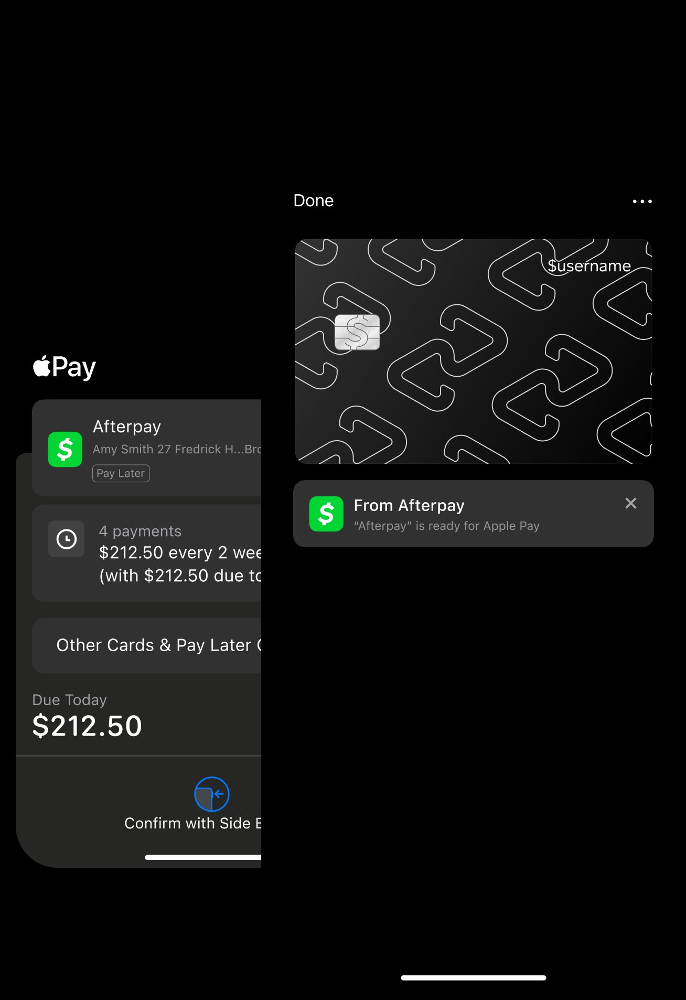
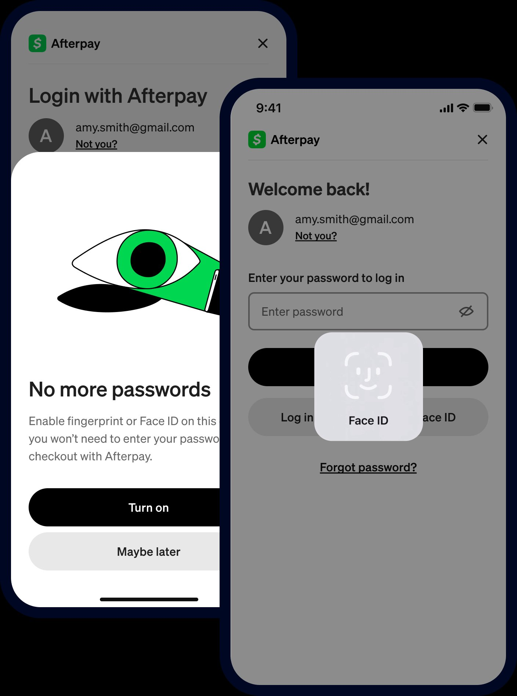

I replaced passwords with biometrics for the 40% of users who were failing to get into the app and built Afterpay natively into Apple Pay and Google Pay.
Mobile DesignPlatform IntegrationAuthenticationTrust & Safety
My role
Lead designer across 3 workstreams
Partners
Risk, platform partnerships, security
Impact
Login failures cut for 40% of users
The problem
40% of Afterpay users were failing to log in. They wanted to use the app but couldn't remember their email address or password, and 97% of them had biometrics turned on for their device. The fix looked obvious but getting there wasn't.
These projects sat between design, security, risk and platform partnerships, where every decision affects more than the user experience. I led design across three connected workstreams covering biometric and mobile-number login, persistent sessions and the native Apple Pay and Google Pay integration.
What I did
1
Designed biometric and mobile-number loginI created login flows that let people sign in with Face ID, Touch ID or a mobile number, which took the email and password out of the picture for most users. I worked closely with the security and risk teams so the flows met authentication standards without adding friction.
2
Introduced persistent sessionsI designed the session patterns that keep people logged in for sensible lengths of time. That cut how often they had to sign in again while keeping the risk controls in place.
3
Integrated Apple Pay and Google PayI led design for Afterpay's native integration into both digital wallets, which makes Afterpay a payment method straight from the device wallet along with all the setup, confirmation and state handling that needs. It meant working closely with the platform partnership teams at Apple and Google.
4
Managed high-stakes edge casesAuthentication, risk and platform work has more edge cases than almost anything else. I designed for device changes, account recovery, failed biometrics and expired sessions without putting new barriers in front of legitimate users.

Apple Pay integration: Afterpay as a native wallet payment method: provisioning, confirmation and card management.

Biometric login flow: replacing password dependency with Face ID and fingerprint, available to 97% of active users.
Why this work matters
Authentication is rarely glamorous but everything else sits behind it. Someone who can't log in isn't really a user, and with 40% of Afterpay's active base hitting that wall, fixing access was one of the most valuable design problems in the product.
The wallet integrations mattered just as much. With Afterpay in Apple Pay and Google Pay it could compete with credit cards in the device wallet, which was a big step towards buy now pay later becoming a default way to pay.
Outcomes
40%Of users were failing to log in, fixed with biometric and mobile-number login
2Major platform integrations with Apple Pay and Google Pay
97%Of users had biometrics available, which became a way to log in